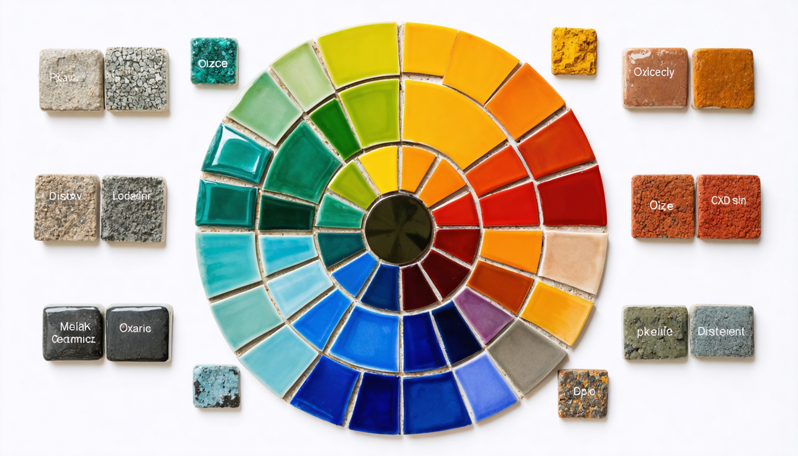

유약 레시피의 이해
유약 레시피는 도자기 표면에 원하는 특성을 구현하기 위한 정확한 원료 배합 지침입니다. 이는 단순히 재료 목록을 나열하는 것을 넘어, 각 성분의 화학적 역할과 상호작용에 대한 깊이 있는 이해를 요구합니다. 성공적인 유약 개발 및 활용은 체계적인 접근 방식과 지속적인 실험을 통해 이루어집니다.
유약 레시피의 구성과 표현 방식
유약 레시피는 일반적으로 사용되는 원료의 무게 비율로 표현됩니다. 이는 제작 과정에서 각 재료를 얼마나 사용해야 하는지를 직관적으로 알려줍니다. 예를 들어, 특정 유약 레시피가 다음과 같이 제시될 수 있습니다.
기본 투명유 예시
- 장석: 45%
- 규석: 30%
- 고령토: 15%
- 탄산칼슘: 10%
이는 전체 유약의 무게를 100으로 기준했을 때, 각 원료가 차지하는 비율을 나타냅니다. 숙련된 도예가들은 이러한 무게 비율을 통해 유약의 기본적인 특성을 예측할 수 있습니다.
더욱 전문적인 수준에서는 유약의 조성을 산화물 분석(Oxide Analysis) 또는 단위 분자식(Unity Molecular Formula, U.M.F.)으로 표현하기도 합니다. 산화물 분석은 유약 내 각 산화물의 몰 비율을 나타내며, 단위 분자식은 융제 그룹(RO)의 몰 합계를 1로 정규화하여 다른 성분들의 비율을 보여주는 방식입니다. 이러한 표현 방식은 유약의 화학적 균형을 이해하고, 다양한 레시피를 비교 분석하는 데 매우 유용합니다.
유약 레시피의 주요 구성 성분 및 역할
유약 레시피는 목표하는 소성 온도, 발색, 질감 등에 따라 다양한 원료를 포함하지만, 핵심적인 역할을 수행하는 주요 성분 그룹이 존재합니다.
융제 (Fluxes - RO 그룹)
융제는 유약의 용융 온도(melting point)를 낮추는 핵심적인 역할을 수행합니다. 소성 과정에서 유약 성분들이 액체 상태로 전환되는 것을 촉진하며, 유약의 흐름성, 표면 장력, 그리고 다른 산화물과의 반응성에 영향을 미칩니다.
알칼리 금속 융제 효과
알칼리 토금속 융제 효과
기타 융제 효과
- 알칼리 금속 융제 (Alkali Fluxes): 소다(Na₂O), 칼륨(K₂O), 리튬(Li₂O) 등은 낮은 온도에서 강력한 융제 역할을 하지만, 과량 사용 시 유약의 화학적 내구성을 저하시키거나 소성 중 휘발될 수 있습니다.
- 알칼리 토금속 융제 (Alkaline Earth Fluxes): 칼슘(CaO), 마그네슘(MgO), 바륨(BaO), 스트론튬(SrO) 등은 알칼리 금속 융제보다 높은 온도에서 작용하며, 유약의 안정성, 강도, 그리고 발색에 영향을 미칩니다. 특히 칼슘은 유약의 매트(matte)한 질감을 형성하는 데 기여하기도 합니다.
- 기타 융제: 아연(ZnO), 납(PbO - 현재는 사용이 제한적), 붕소(B₂O₃) 등은 특정 온도 범위나 특수한 효과를 위해 사용됩니다. 붕소는 저온 유약의 용융을 돕고, 독특한 질감을 부여할 수 있습니다.
유리질형성제 (Glass Former - 주로 SiO₂)
규산(Silica, SiO₂)은 유약의 기본적인 유리질 네트워크(vitreous network)를 형성하는 주성분입니다. 고온에서 용융되어 냉각될 때 비정질의 유리 구조를 형성하며, 유약의 투명도, 광택, 경도, 그리고 화학적 내구성을 결정합니다. 유약 레시피에서 규산의 함량은 목표하는 유약의 특성에 따라 신중하게 조절됩니다.
안정제 (Stabilizers - 주로 Al₂O₃)
알루미나(Al₂O₃)는 유약의 점도(viscosity)를 높여 소성 중 유약이 과도하게 흘러내리는 것을 방지하고, 냉각 후 유약의 기계적 강도와 화학적 내구성을 향상시키는 역할을 합니다. 유약 레시피에서 알루미나는 주로 점토 광물(고령토, 백토 등)이나 수산화알루미늄 형태로 공급됩니다. 점토 광물은 알루미나 외에도 가소성을 부여하여 유약의 시유 작업성을 향상시키는 이점도 제공합니다.
색 발색제 및 기타 첨가제의 역할
유약 레시피에는 원하는 색상과 특수 효과를 구현하기 위해 다양한 금속 산화물 및 기타 첨가제가 포함될 수 있습니다.
색 발색제
불투명제
결정 성장제
- 색 발색제 (Colorants): 전이 금속 산화물은 특정 파장의 빛을 흡수하거나 반사하여 유약에 다양한 색상을 부여합니다. 철(Fe), 구리(Cu), 코발트(Co), 크롬(Cr), 망간(Mn), 니켈(Ni) 등이 대표적인 색 발색제이며, 소성 분위기(산화 또는 환원)에 따라 발색 결과가 달라질 수 있습니다.
- 불투명제 (Opacifiers): 산화주석(SnO₂), 산화지르코늄(ZrO₂), 인산칼슘 등은 유약 내에서 미세한 입자로 존재하며 빛을 산란시켜 유약을 불투명하게 만듭니다.
- 유백제 (Opalescent Agents): 특정 성분(예: 인산칼슘)은 유약 내에서 미세한 액체 방울을 형성하여 빛을 산란시키고 우윳빛의 부드러운 효과를 나타냅니다.
- 결정 성장제 (Crystalline Glaze Additives): 아연(ZnO), 티타늄(TiO₂) 등은 특정 소성 조건 하에서 유약 내에 아름다운 결정 구조를 형성하도록 유도합니다.
- 유변학 조절제 (Rheology Modifiers): 벤토나이트와 같은 점토 광물이나 특정 유기 첨가제는 유약 현탁액의 점도와 안정성을 조절하여 시유 작업성을 향상시키는 데 사용됩니다.
유약 레시피 설계 및 활용 시 고려 사항
성공적인 유약 레시피 개발 및 활용을 위해서는 다음과 같은 요소를 고려해야 합니다.
- 소성 온도 범위: 유약 레시피는 특정 소성 온도 범위에 최적화되어 있습니다. 레시피를 선택하거나 개발할 때 목표하는 소성 온도를 고려해야 합니다.
- 소성 분위기: 일부 유약은 산화 분위기에서, 다른 유약은 환원 분위기에서 최적의 발색 결과를 나타냅니다. 레시피에 명시된 소성 조건을 확인해야 합니다.
- 원료의 순도 및 특성: 유약 제조에 사용되는 원료의 순도와 입도, 그리고 화학적 조성은 최종 유약 결과에 영향을 미칠 수 있습니다. 일관된 품질의 원료를 사용하는 것이 중요합니다.
- 정확한 계량 및 혼합: 유약 레시피에 따른 정확한 무게 측정과 균일한 혼합은 성공적인 결과물을 얻기 위한 필수 조건입니다.
- 테스트 소성: 완성된 유약은 실제 작품에 적용하기 전에 반드시 테스트 타일을 사용하여 소성 결과를 확인해야 합니다. 흐름성, 색상, 질감, 그리고 결함 여부를 꼼꼼히 관찰하고 기록해야 합니다.
주요 유약 레시피 예시
다음은 몇 가지 기본적인 유약 레시피의 예시입니다. 이 레시피들은 출발점으로 활용하여 자신만의 유약을 개발하는 데 도움이 될 수 있습니다.
기본 투명유 (콘 6, 산화)
- 네프실린 장석: 50%
- 규석: 30%
- 고령토: 15%
- 탄산칼슘: 5%
매트유 (콘 6, 산화)
- 네프실린 장석: 40%
- 탄산바륨: 20%
- 고령토: 20%
- 규석: 15%
- 산화아연: 5%
청자유 (콘 10, 환원)
- 장석: 40%
- 규석: 25%
- 석회석: 15%
- 도석: 20%
- 산화철: 2%
결정유 (콘 6-7, 산화)
- 프리트: 45%
- 산화아연: 25%
- 규석: 20%
- 고령토: 10%
- 산화티타늄: 2%
- 산화코발트: 0.5%
이 레시피들은 기본적인 지침일 뿐, 실제 사용 시에는 자신의 원료, 소성 조건, 클레이 바디에 맞게 테스트하고 조정해야 합니다. 유약 제작과 테스트는 체계적이고 안전한 방식으로 진행해야 하며, 특히 일부 유약 재료는 건강에 유해할 수 있으므로 적절한 안전 장비와 환기가 필요합니다.
세계적으로 유명한 유약 레시피 10가지
아래의 레시피들은 역사적으로 중요한 의미를 가지거나, 특정 문화권 또는 도예가에 의해 널리 알려진 유약들입니다. 다만, 정확한 레시피는 종종 비밀로 전해지거나 재료의 산지 및 소성 조건에 따라 미묘한 차이를 보일 수 있다는 점을 참고해 주세요. 제시된 레시피는 일반적인 경향을 나타냅니다.
1. 청자 유약 (Celadon Glaze)
동아시아를 대표하는 비색의 아름다움을 지닌 유약입니다. 철 성분의 함량과 환원 소성 분위기에 따라 다양한 푸른색 계열을 띱니다.
소성 온도
일반적으로 산화철 함량에 따라 다르지만, 중고온 (1200°C ~ 1300°C) 환원 소성
일반적인 재료 비율
- 장석: 40-50%
- 규석: 20-30%
- 백토 (Kaolin): 10-20%
- 탄산칼슘 (Whiting): 5-10%
- 산화철 (Iron Oxide): 0.5-2% (색상에 따라 조절)
특징 및 소성
철 성분이 환원 분위기에서 독특한 푸른색을 발현합니다. 섬세한 균열(빙렬)이 나타나기도 합니다. 소성 과정에서 온도와 환원 정도를 정밀하게 조절하는 것이 중요합니다.
2. 천목 유약 (Tenmoku Glaze)
중국 송나라 시대에 번성한 철유의 대표적인 유약입니다. 검은색을 기본으로 하며, 소성 조건에 따라 유면 위에 기름방울(油滴), 토끼털(兔毫) 등의 다양한 무늬가 나타납니다.
소성 온도
고온 (1250°C ~ 1350°C) 환원 소성
일반적인 재료 비율
- 장석: 30-40%
- 규석: 20-30%
- 점토 (Ball Clay): 10-20%
- 산화철 (Iron Oxide): 5-10% (무늬 발현에 중요)
특징 및 소성
높은 함량의 산화철이 고온 환원 소성에서 용융되어 특징적인 검은색과 무늬를 만들어냅니다. 소성 과정의 온도 변화와 냉각 속도가 무늬 형성에 큰 영향을 미칩니다.
3. 시노 유약 (Shino Glaze)
일본 미노 지방에서 발전한 독특한 질감의 유약입니다. 불투명한 흰색을 띠며, 소성 과정에서 붉은색의 불꽃무늬(火色)가 나타나기도 하고, 표면에 미세한 균열이 생기기도 합니다.
소성 온도
중고온 (1200°C ~ 1280°C) 환원 소성
일반적인 재료 비율
- 장석: 60-70%
- 소다회 (Soda Ash): 10-20%
- 백토 (Kaolin): 10-20%
특징 및 소성
두껍게 시유하며, 소성 과정에서 급격한 온도 변화를 주어 독특한 질감과 불꽃무늬를 만들어냅니다. 환원 소성 분위기가 중요하며, 소성 조건에 따라 다양한 변주가 가능합니다.
4. 오리베 유약 (Oribe Glaze)
일본 모모야마 시대에 탄생한 선명한 녹색 유약입니다. 구리 성분을 사용하여 발색하며, 철화 문양과 함께 사용되는 경우가 많습니다.
소성 온도
중저온 (1050°C ~ 1200°C) 산화 소성
일반적인 재료 비율
- 납유 (Lead Oxide): 60-70% (최근에는 무연 오리베 유약 레시피도 많이 개발됨)
- 규석: 20-30%
- 백토 (Kaolin): 5-10%
- 탄산구리 (Copper Carbonate): 1-3% (색상에 따라 조절)
특징 및 소성
밝고 선명한 녹색이 특징이며, 납유를 사용하여 광택이 좋습니다. 산화 소성 분위기에서 구리 성분이 녹색을 발현합니다.
5. 진사 유약 (Copper Red Glaze)
붉은색을 내는 유약으로, 환원 소성 조건이 매우 까다로워 성공률이 낮은 것으로 유명합니다. 붉은색의 깊이와 발색은 소성 과정의 미묘한 온도 및 분위기 변화에 크게 영향을 받습니다.
소성 온도
고온 (1250°C ~ 1350°C) 환원 소성
일반적인 재료 비율
- 장석: 40-50%
- 규석: 20-30%
- 탄산칼슘 (Whiting): 10-20%
- 산화주석 (Tin Oxide): 2-5% (붉은색 안정에 도움)
- 탄산동 (Copper Carbonate): 0.1-0.5% (극소량 사용)
특징 및 소성
극히 적은 양의 구리 성분이 환원 소성 조건에서 콜로이드 상태로 석출되어 붉은색을 나타냅니다. 소성 과정의 온도 곡선과 환원 정도를 매우 정밀하게 제어해야 합니다.
6. 균요 유약 (Jun Glaze)
중국 송나라 시대의 대표적인 유약 중 하나로, 푸른색 바탕에 보라색이나 붉은색의 반점이 나타나는 신비로운 색감을 지닙니다. 유백광이 느껴지는 것이 특징입니다.
소성 온도
고온 (1250°C ~ 1350°C) 환원 소성
일반적인 재료 비율
- 장석: 30-40%
- 규석: 20-30%
- 백운석 (Dolomite): 10-20%
- 탄산칼슘 (Whiting): 5-10%
- 산화동 (Copper Oxide): 0.5-1.5% (색상 발현)
특징 및 소성
구리 성분과 특정 성분들의 조합으로 인해 환원 소성 시 푸른색과 붉은색이 공존하는 독특한 색감을 나타냅니다. 유백 효과는 유약층 내의 미세한 결정 입자들에 의해 발생합니다.
7. 재 유약 (Ash Glaze)
나무 재를 주원료로 사용하여 만든 전통적인 유약입니다. 나무의 종류와 소성 조건에 따라 다양한 색상과 질감을 나타냅니다. 자연스러운 색감과 독특한 표면 질감이 특징입니다.
소성 온도
중고온 (1200°C ~ 1300°C) 환원 또는 산화 소성 (재의 종류에 따라 다름)
일반적인 재료 비율
- 나무 재 (Washed Wood Ash): 50-70%
- 점토 (Clay): 20-30%
- 장석: 10-20%
특징 및 소성
나무 재의 알칼리 성분이 융제 역할을 하며, 재의 종류에 따라 다양한 미네랄 성분이 색상과 질감에 영향을 미칩니다. 소성 시 재가 녹아내리면서 자연스러운 흐름과 독특한 표면을 형성합니다.
8. 염화소금 유약 (Salt Glaze)
유약을 직접 입히는 대신, 고온 소성 중 가마 안에 소금을 투입하여 소금의 나트륨 성분이 기물의 실리카 성분과 반응하여 형성되는 독특한 질감의 유약입니다. 오렌지 껍질과 유사한 표면 질감이 특징입니다.
소성 온도
고온 (1100°C ~ 1300°C) 산화 소성
일반적인 재료
유약 레시피보다는 소성 과정이 중요하며, 소금 투입 시 반응이 잘 일어나는 점토를 사용하는 것이 중요합니다.
특징 및 소성
소금이 고온에서 분해되어 염화나트륨 가스가 발생하고, 이 가스가 기물 표면의 실리카와 반응하여 얇고 광택 있는 나트륨 규산염 유리층을 형성합니다. 독특한 질감과 소금 투입량, 가마 내부의 분위기에 따라 다양한 표현이 가능합니다. (주의: 소금 소성은 가마에 손상을 줄 수 있으며, 유해 가스가 발생하므로 안전에 유의해야 합니다.)
9. 브리스톨 유약 (Bristol Glaze)
19세기 영국 브리스톨 지역에서 개발된 불투명한 흰색 유약입니다. 매끄러운 표면과 뛰어난 내구성을 가지고 있어 위생 도기 등에 널리 사용되었습니다.
소성 온도
중고온 (1150°C ~ 1250°C) 산화 소성
일반적인 재료 비율
- 장석: 30-40%
- 규석: 20-30%
- 탄산아연 (Zinc Oxide): 15-25% (불투명성 부여)
- 점토 (Clay): 10-20%
특징 및 소성
아연 성분이 불투명성을 부여하며, 매끄럽고 단단한 표면을 형성합니다. 산화 소성 분위기에서 안정적인 흰색을 나타냅니다.
10. 파이앙스 유약 (Faience Glaze)
주석을 사용하여 불투명한 흰색을 내는 유약으로, 그 위에 그림을 그리기에 적합합니다. 르네상스 시대 유럽에서 크게 유행했으며, 밝고 화려한 색상의 안료와 함께 사용되었습니다.
소성 온도
저온 (950°C ~ 1150°C) 산화 소성
일반적인 재료 비율 (납유약 기준)
- 산화납 (Lead Oxide): 50-60%
- 규석: 20-30%
- 탄산나트륨 (Soda Ash): 5-10%
- 산화주석 (Tin Oxide): 5-10% (불투명한 흰색 발현)
특징 및 소성
주석 성분이 빛을 반사하여 불투명한 흰색 바탕을 만들고, 그 위에 다양한 금속 산화물 안료로 그림을 그릴 수 있습니다. (최근에는 무연 파이앙스 유약 레시피도 개발되고 있습니다.)
유약 레시피 정보의 습득 및 활용
다양한 유약 레시피는 도예 관련 서적, 학술 논문, 온라인 데이터베이스, 그리고 도예가 커뮤니티를 통해 얻을 수 있습니다. 이러한 정보를 바탕으로 자신만의 유약을 개발하거나, 기존 레시피를 수정하여 원하는 결과를 얻을 수 있습니다. 유약 계산 소프트웨어는 산화물 분석 기반의 레시피를 실제 원료 배합비로 변환하거나, 레시피를 분석하는 데 매우 유용한 도구입니다.
결론적으로, 유약 레시피는 과학적인 원리에 기반한 정밀한 배합이며, 도예가가 원하는 예술적 표현을 구현하는 데 핵심적인 역할을 수행합니다. 유약의 기본 원리와 각 성분의 기능을 깊이 이해하고, 체계적인 실험과 경험을 통해 자신만의 독창적인 유약 세계를 탐구해 나가시기를 바랍니다.